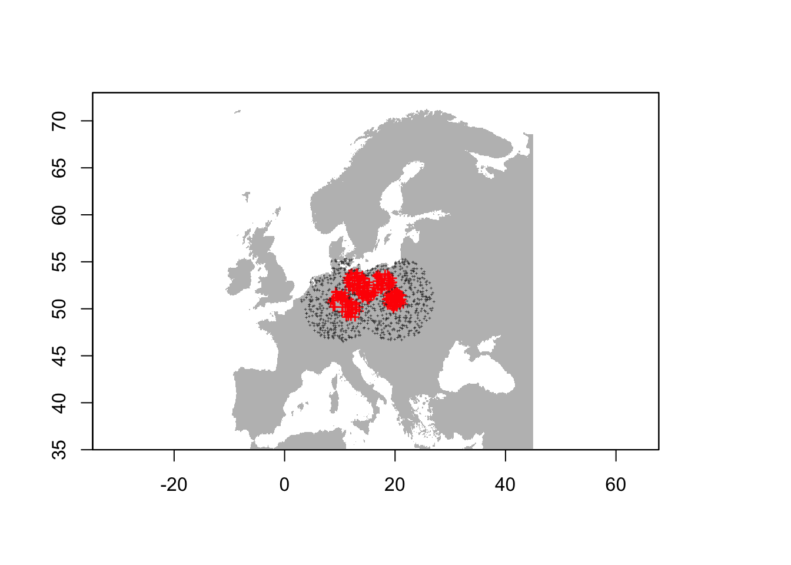
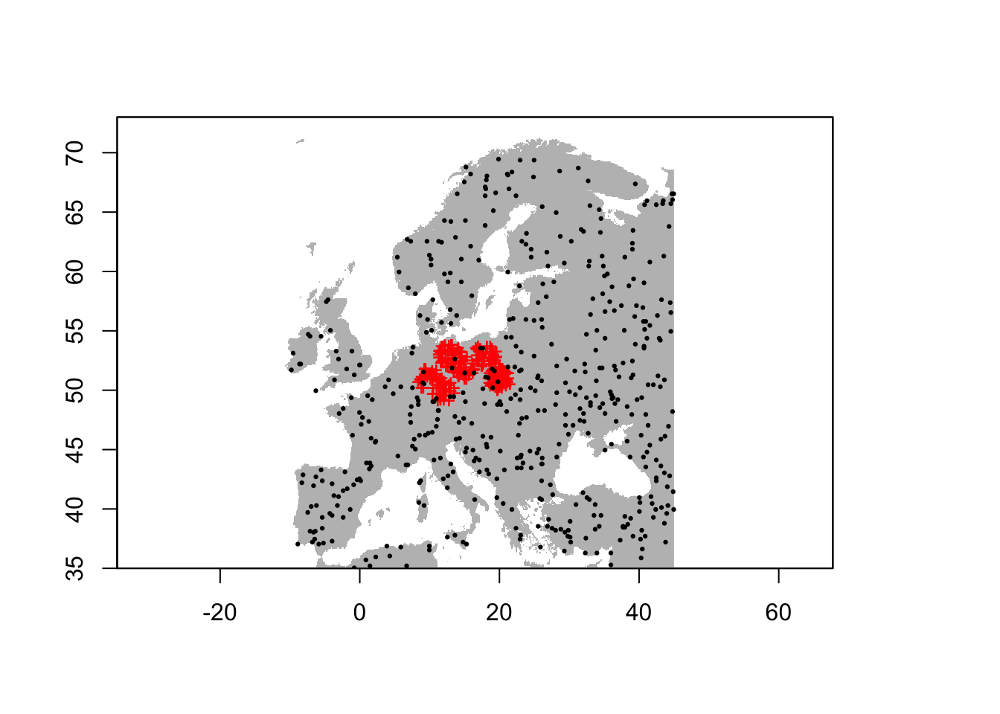
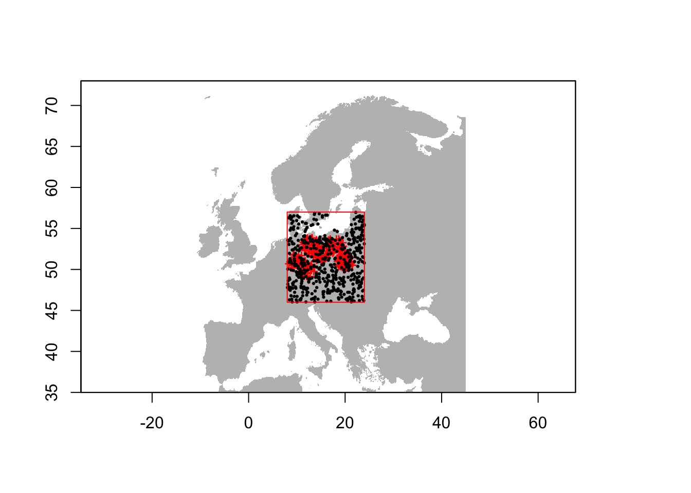
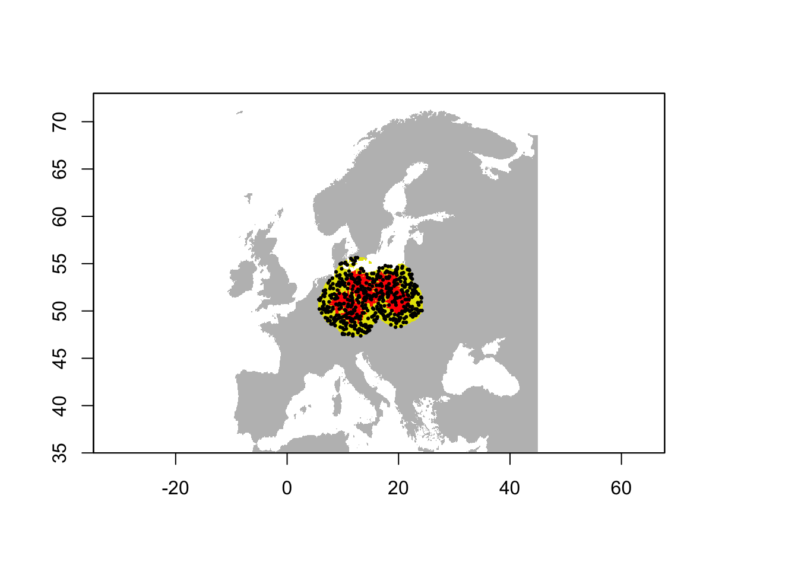
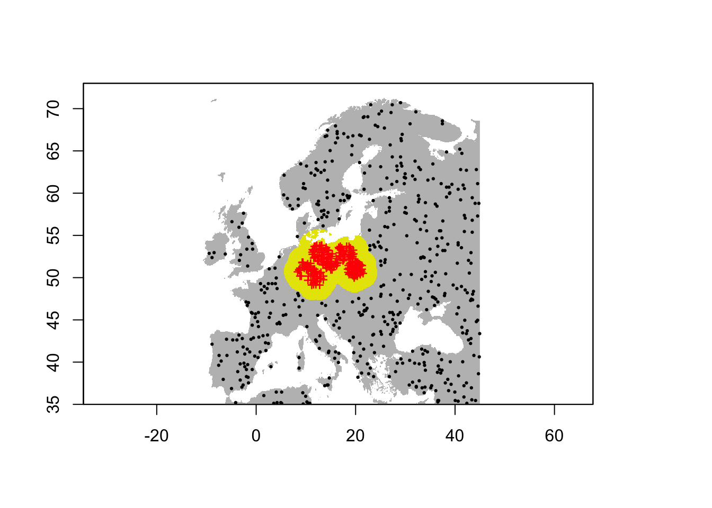
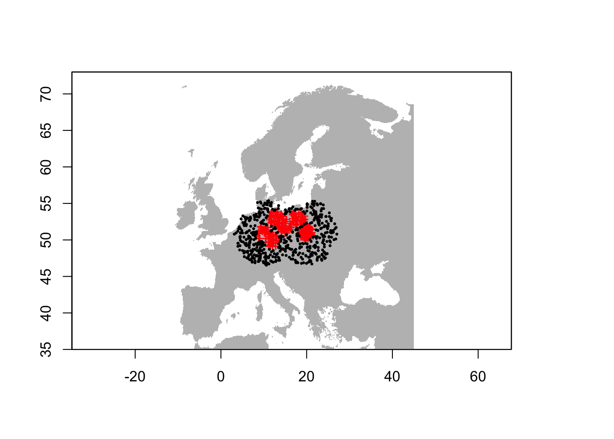
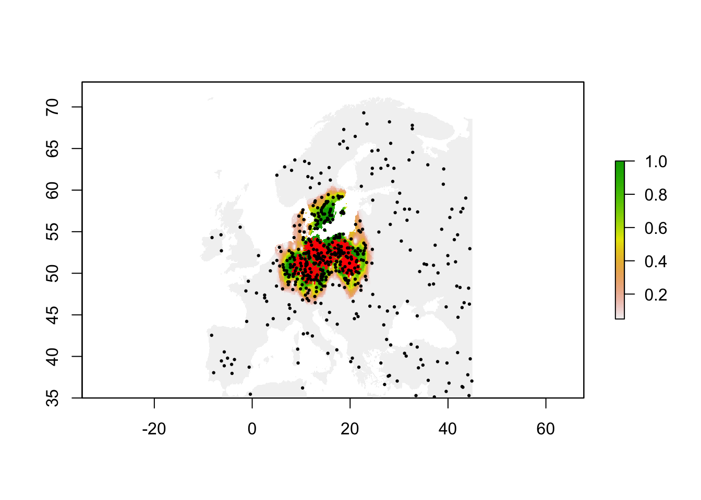
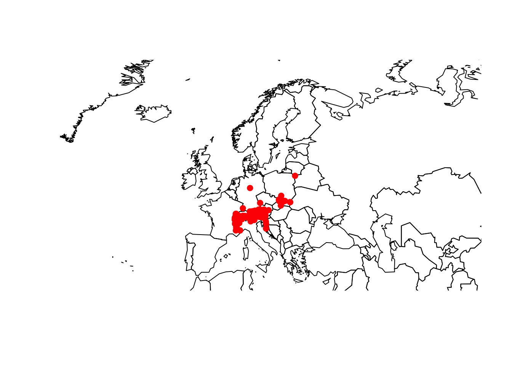
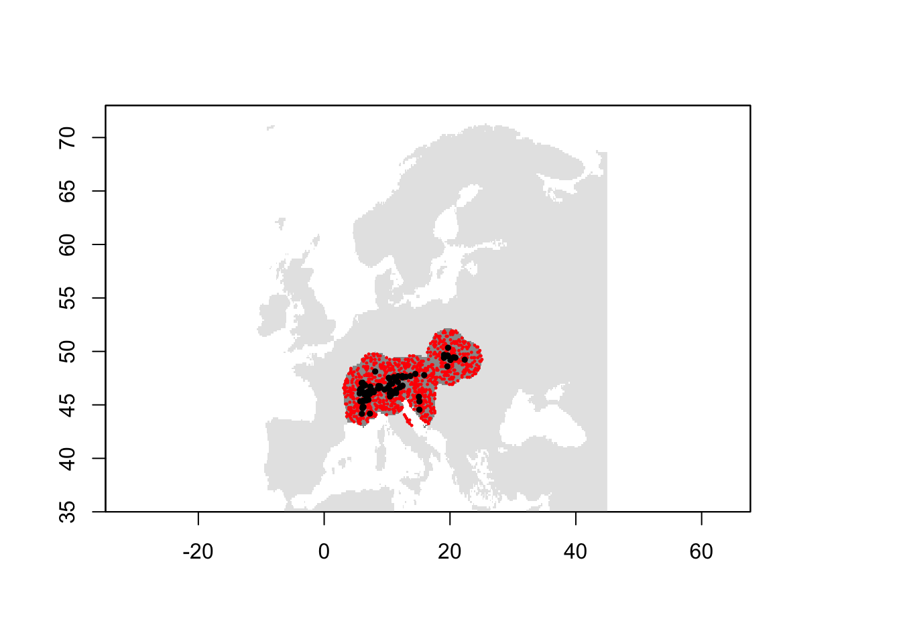

In the previous sessions, we have worked with very convenient presence/absence data to train our species distribution models (SDMs). However, as you have seen when downloading your own GBIF data, we often have only presence records available. Absence data are also inherently difficult to get because it requires a very high sampling effort to classify a species as absent from a location. For plants, we would need complete inventories of a larger region, e.g. several 100 m plots placed within larger 1 km sample squares. For birds, we would need several visits to a specific region within the breeding season. In both cases, we could still miss some species, meaning that we do not record the species although present (resulting in a false negative).
But what should we do if absence data are not available? Most SDM algorithms (except the profile methods, see session 6) need some kind of absence or background data to contrast the presence data to. There are different approaches for creating background data or pseudo-absence data (Barbet-Massin et al. 2012; Kramer-Schadt et al. 2013; Phillips et al. 2009), although there is still room for further developments in this field and more clear-cut recommendations for users would be certainly useful. Nevertheless, I hope this tutorial will provide some examples of how to deal with presence-only data. For advice on how many background/pseudo-absence points you need, please read (Barbet-Massin et al. 2012).
In this session, we look at four different ways of creating background/pseudo-absence data:
I created a virtual species data set with presence points for a dummy species called Populus imagines and sister species Populus spp. The spatial resolution of the data is 5 minutes. You can download the data here or from the moodle page.
Load and plot the data:
library(raster)
library(dismo)
mask <- raster('data/Prac5_Europe5min.grd')
sp <- read.table('data/Prac5_presences.txt', header=T)
# Plot the map and data
plot(mask,col='grey',legend=F)
points(sp[sp$sp=='Populus_imagines',1:2],pch='+',col='red')
points(sp[sp$sp=='Populus_spp',1:2],pch='+',cex=0.3,col='grey20')
We use a lot of methods from the dismo tutorials, which are worth looking into (see link here).
The dismo package has a function to sample random points (background data).
# Randomly select background points from study region
bg_rand <- randomPoints(mask, 500)
# Plot the map and data
plot(mask,col='grey',legend=F)
points(sp[sp$sp=='Populus_imagines',1:2],pch='+',col='red')
points(bg_rand,pch=19,cex=0.3)
So, this function will by default sample from the entire study area independent of the presence points. We can also provide the presence points as additional argument, and by that make sure that random background data are not sampled from presence locations.
# Randomly select background data but excluding presence locations
bg_rand2 <- randomPoints(mask, 500, p=sp[sp$sp=='Populus_imagines',1:2])
# Plot the map and data
plot(mask,col='grey',legend=F)
points(sp[sp$sp=='Populus_imagines',1:2],pch='+',col='red')
points(bg_rand2,pch=19,cex=0.3)Also, we can define an extent from where random points should be drawn. By default, this extent is increased by 5% at each side. To circumvent this, we set extf=1.0.
# Define extent object:
e <- extent(8,24,46,57)
# Randomly select background data within a restricted extent
bg_rand3 <- randomPoints(mask, 500, p=sp[sp$sp=='Populus_imagines',1:2], ext=e, extf=1.0)
# Plot the map and data
plot(mask,col='grey',legend=F)
points(sp[sp$sp=='Populus_imagines',1:2],pch='+',col='red')
points(bg_rand3,pch=19,cex=0.3)
plot(e, add=TRUE, col='red')
Last, we could also restrict the random samples to within a certain buffer distance. For this, we first create a SpatialPointsDataFrame, then place a buffer around these and sample from within the buffer.
# Make SpatialPointsDataFrame:
pop_imag <- sp[sp$sp=='Populus_imagines',1:2]
coordinates(pop_imag) <- ~x+y
projection(pop_imag) <- CRS('+proj=longlat +datum=WGS84')
# Then, place a buffer of 200 km radius around our presence points
x <- buffer(pop_imag,width=200000)
# Set all raster cells outside the buffer to NA
x <- mask(mask,x)
# Randomly select background data within the buffer
bg_rand4 <- randomPoints(x, 500)
# Plot the map and data
plot(mask,col='grey',legend=F)
plot(x, legend=F, add=T)
points(sp[sp$sp=='Populus_imagines',1:2],pch='+',col='red')
points(bg_rand4,pch=19,cex=0.3)
Barbet-Massin et al. (2012) also suggested a method to sample pseudo-absences only beyond a minimum distance from the presence points. We can also use the buffering approach from above to achieve this.
# Place a buffer of 100 km radius around our presence points
x <- buffer(pop_imag,width=200000)
# Set all raster cells outside the buffer to NA
x <- mask(mask,x)
# Now, we set all the buffer cells in the mask to NA
mask2 <- mask
values(mask2)[values(x)==1 & !is.na(values(x))] <- NA
# Randomly select background data outside the buffer
bg_far <- randomPoints(mask2, 500)
# Plot the map and data
plot(mask,col='grey',legend=F)
plot(x,legend=F, add=T)
points(sp[sp$sp=='Populus_imagines',1:2],pch='+',col='red')
points(bg_far,pch=19,cex=0.3)
A critical assumption behind the above-mentioned background/pseudo-absence sampling is that the presence points were systematically or randomly sampled from the known distribution and are not spatially biased. In practice, this assumption is often violated, for example when observers go to more easily accessible areas. Phillips et al. (2009) suggested a target-group sampling for this. The idea is that we use the presence points of other groups of species as potential pseudo-absence points to mimic survey effort. These target groups should be collected or observed using the same methods and equipments. So, this approach is kind of assuming that no complete inventories were made by the observers but that there is a chance that if the species had been there it would have been observed along with the others.
Here, we use the sister populus species as target group.
# Randomly select background points from the target group
p <- sample(seq_len(nrow(sp[sp$sp=='Populus_spp',])), 500)
bg_target <- sp[sp$sp=='Populus_spp',1:2][p,]
# Plot the map and data
plot(mask,col='grey',legend=F)
points(sp[sp$sp=='Populus_imagines',1:2],pch='+',col='red')
points(bg_target,pch=19,cex=0.3)
In the last example, we manipulate the background to have the same sampling bias as the presence data (Kramer-Schadt et al. 2013). For example, this is particularly useful if presence records are restricted to easily accessible areas like roads. We use inverse distance weighting to define the sampling density of the presence points and then sample background proportional to that density. Following Kramer-Schadt et al. (2013), we assume a low sampling effort outside the sampling range of the presence data - here a 5% sampling effort.
# Compute inverse distance weighted interpolation and create raster with density layer
idw <- geoIDW(as.matrix(sp[sp$sp=='Populus_imagines',1:2]),
randomPoints(mask, sum(sp$sp=='Populus_imagines')))
idw_r <- predict(mask, idw)## [inverse distance weighted interpolation]# Re-classify density values below 0.05 indicating a 1/20 of the sampling effort
values(idw_r)[values(idw_r) < 0.05] <- 0.05
# Clip to land mass
idw_r <- mask(idw_r,mask)
# Randomly select background data proportional to sampling density in presence data
bg_idw <- randomPoints(idw_r, 500, prob=T)
# Plot the map and data
plot(idw_r)
points(sp[sp$sp=='Populus_imagines',1:2],pch='+',col='red')
points(bg_idw,pch=19,cex=0.3)
In session 2, we have already learned how to join species data and environmental data (at 10 min resolution) using the Alpine Shrew as example species. Here, we will revisit this example, sample random background data and join these with environmental data to come up with a datset containing presences and background data as well as the climatic predictors.
# Load the data set from session 2 containing species presence data and climate data:
load('data/gbif_shrew_env.RData')
head(gbif_shrew_env)## key scientificName decimalLatitude decimalLongitude
## 1 2251919320 Sorex alpinus Schinz, 1837 47.69411 13.681602
## 2 2330155268 Sorex alpinus Schinz, 1837 48.12057 8.109648
## 3 2269283117 Sorex alpinus Schinz, 1837 46.39159 10.421819
## 4 2610972391 Sorex alpinus Schinz, 1837 46.02428 10.828994
## 6 2609080674 Sorex alpinus Schinz, 1837 46.19628 11.263646
## 7 2423224540 Sorex alpinus Schinz, 1837 46.98664 10.811803
## basisOfRecord speciesKey species year cells bio1 bio2 bio3 bio4
## 1 HUMAN_OBSERVATION 2435986 Sorex alpinus 2019 547643 47 94 33 6777
## 2 HUMAN_OBSERVATION 2435986 Sorex alpinus 2019 543289 74 80 32 6125
## 3 HUMAN_OBSERVATION 2435986 Sorex alpinus 2019 564903 14 64 28 5644
## 4 HUMAN_OBSERVATION 2435986 Sorex alpinus 2019 569225 65 82 30 6522
## 6 HUMAN_OBSERVATION 2435986 Sorex alpinus 2019 567068 85 94 31 6971
## 7 HUMAN_OBSERVATION 2435986 Sorex alpinus 2019 558425 -25 53 26 5181
## bio5 bio6 bio7 bio8 bio9 bio10 bio11 bio12 bio13 bio14 bio15 bio16 bio17
## 1 196 -88 284 132 1 132 -42 1495 183 89 26 529 293
## 2 209 -41 250 151 30 151 -5 1147 120 77 15 342 250
## 3 134 -90 224 85 -55 85 -55 1022 127 52 28 355 169
## 4 211 -60 271 145 -19 148 -19 768 98 32 35 268 102
## 6 242 -55 297 172 -7 172 -7 786 99 33 34 274 104
## 7 78 -120 198 40 -86 41 -86 1464 162 96 17 464 310
## bio18 bio19
## 1 529 324
## 2 342 270
## 3 355 169
## 4 266 102
## 6 274 104
## 7 429 320# Plot the species presences
library(maptools)
data(wrld_simpl)
plot(wrld_simpl,xlim=c(-12,45), ylim=c(35,73))
points(gbif_shrew_env$decimalLongitude, gbif_shrew_env$decimalLatitude, col='red', pch=19)
You have already downloaded the climate data in session 2 and can simply read it back in. We crop it to European extent.
# You may have to adjust the path to your folder structure:
clim <- getData("worldclim", var="bio", res=10, download=F, path="data/clim_data")
# Crop to Europe
clim <- crop(clim, c(-12,45,35,73))We place a buffer of 200 km around the shrew records and sample background points randomly from within the buffer but excluding presence locations.
# Make SpatialPointsDataFrame:
presences <- gbif_shrew_env[,c('decimalLongitude','decimalLatitude')]
coordinates(presences) <- ~decimalLongitude + decimalLatitude
projection(presences) <- CRS('+proj=longlat +datum=WGS84')
# Then, place a buffer of 200 km radius around our presence points
buf <- buffer(presences,width=200000)
# Create a mask with target resolution and extent from climate layers
mask <- clim[[1]]
values(mask)[!is.na(values(mask))] <- 1
plot(mask, col='grey90', legend=F)
# Set all raster cells outside the buffer to NA.
buf <- mask(mask,buf)
plot(buf, add=T, col='grey60', legend=F)
# Randomly select background data within the buffer, excluding presence locations. We sample 10 times as many background data as we have presences.
bg_dat <- randomPoints(buf, length(presences)*10, p=presences)
points(bg_dat, pch=19, cex=0.2, col='red')
points(presences, pch=19, cex=0.5)
Last, we need to join the presences and background data, and extract the environmental data.
# First, we prepare the presences data to contain a column indicating 1 for presence.
sp_env <- data.frame(gbif_shrew_env[,c('decimalLongitude','decimalLatitude')], occ=1)
# Second, we make sure the background data have the same columns
bg_dat <- data.frame(bg_dat)
summary(bg_dat)## x y
## Min. : 3.083 Min. :43.08
## 1st Qu.: 8.083 1st Qu.:45.58
## Median :13.417 Median :47.42
## Mean :13.209 Mean :47.27
## 3rd Qu.:17.583 3rd Qu.:48.75
## Max. :25.083 Max. :51.92names(bg_dat) <- c('decimalLongitude','decimalLatitude')
bg_dat$occ <- 0
summary(bg_dat)## decimalLongitude decimalLatitude occ
## Min. : 3.083 Min. :43.08 Min. :0
## 1st Qu.: 8.083 1st Qu.:45.58 1st Qu.:0
## Median :13.417 Median :47.42 Median :0
## Mean :13.209 Mean :47.27 Mean :0
## 3rd Qu.:17.583 3rd Qu.:48.75 3rd Qu.:0
## Max. :25.083 Max. :51.92 Max. :0# Third, we bind these two data sets
sp_env <- rbind(sp_env, bg_dat)
summary(sp_env)## decimalLongitude decimalLatitude occ
## Min. : 3.083 Min. :43.08 Min. :0.00000
## 1st Qu.: 7.721 1st Qu.:45.58 1st Qu.:0.00000
## Median :12.750 Median :47.25 Median :0.00000
## Mean :12.962 Mean :47.22 Mean :0.09091
## 3rd Qu.:17.583 3rd Qu.:48.75 3rd Qu.:0.00000
## Max. :25.083 Max. :51.92 Max. :1.00000# Last, we join this combined data set with the climate data.
sp_env <- cbind(sp_env, raster::extract(x = clim, y = sp_env[,c('decimalLongitude','decimalLatitude')], cellnumbers=T) )
summary(sp_env)## decimalLongitude decimalLatitude occ cells
## Min. : 3.083 Min. :43.08 Min. :0.00000 Min. :43279
## 1st Qu.: 7.721 1st Qu.:45.58 1st Qu.:0.00000 1st Qu.:49783
## Median :12.750 Median :47.25 Median :0.00000 Median :52794
## Mean :12.962 Mean :47.22 Mean :0.09091 Mean :52868
## 3rd Qu.:17.583 3rd Qu.:48.75 3rd Qu.:0.00000 3rd Qu.:56204
## Max. :25.083 Max. :51.92 Max. :1.00000 Max. :61374
## bio1 bio2 bio3 bio4
## Min. :-25.00 Min. : 53.00 Min. :26.00 Min. :5106
## 1st Qu.: 70.00 1st Qu.: 83.00 1st Qu.:29.00 1st Qu.:6212
## Median : 83.00 Median : 88.00 Median :31.00 Median :6826
## Mean : 83.73 Mean : 87.51 Mean :30.91 Mean :6802
## 3rd Qu.:102.00 3rd Qu.: 94.00 3rd Qu.:32.00 3rd Qu.:7364
## Max. :159.00 Max. :105.00 Max. :39.00 Max. :8288
## bio5 bio6 bio7 bio8
## Min. : 78.0 Min. :-120.00 Min. :198.0 Min. :-72.0
## 1st Qu.:220.0 1st Qu.: -72.00 1st Qu.:260.0 1st Qu.:114.8
## Median :235.0 Median : -49.00 Median :281.0 Median :156.0
## Mean :232.2 Mean : -46.87 Mean :279.1 Mean :134.6
## 3rd Qu.:257.0 3rd Qu.: -24.00 3rd Qu.:301.0 3rd Qu.:171.0
## Max. :300.0 Max. : 47.00 Max. :329.0 Max. :204.0
## bio9 bio10 bio11 bio12
## Min. :-86.00 Min. : 41 Min. :-86.000 Min. : 518.0
## 1st Qu.:-11.25 1st Qu.:157 1st Qu.:-29.000 1st Qu.: 704.8
## Median : 13.00 Median :172 Median : -7.000 Median : 833.0
## Mean : 35.18 Mean :169 Mean : -5.687 Mean : 899.0
## 3rd Qu.: 53.00 3rd Qu.:190 3rd Qu.: 14.000 3rd Qu.:1042.0
## Max. :239.00 Max. :239 Max. : 85.000 Max. :1972.0
## bio13 bio14 bio15 bio16
## Min. : 65.0 Min. : 15.00 Min. : 7.00 Min. :173.0
## 1st Qu.: 86.0 1st Qu.: 35.00 1st Qu.:18.00 1st Qu.:238.0
## Median :102.0 Median : 47.00 Median :26.00 Median :282.0
## Mean :107.6 Mean : 50.72 Mean :25.76 Mean :299.8
## 3rd Qu.:125.0 3rd Qu.: 61.00 3rd Qu.:34.00 3rd Qu.:350.0
## Max. :195.0 Max. :143.00 Max. :46.00 Max. :561.0
## bio17 bio18 bio19
## Min. : 74.0 Min. : 84.0 Min. : 80.0
## 1st Qu.:115.8 1st Qu.:215.0 1st Qu.:127.8
## Median :153.5 Median :262.0 Median :171.5
## Mean :165.8 Mean :273.8 Mean :186.5
## 3rd Qu.:197.2 3rd Qu.:319.0 3rd Qu.:221.0
## Max. :453.0 Max. :561.0 Max. :516.0Exercise:
Use the GBIF data for your own species (from practical 1), sample background data and prepare a data set with species and climate data. Use these data to run SDMs.
Barbet-Massin, Morgane, Frederic Jiguet, Cecile Helene Albert, and Wilfried Thuiller. 2012. “Selecting Pseudo-Absences for Species Distribution Models: How, Where and How Many?” Methods in Ecology and Evolution 3 (2): 327–38. https://doi.org/10.1111/j.2041-210X.2011.00172.x.
Kramer-Schadt, Stephanie, Juergen Niedballa, John D. Pilgrim, Boris Schroeder, Jana Lindenborn, Vanessa Reinfelder, Milena Stillfried, et al. 2013. “The Importance of Correcting for Sampling Bias in Maxent Species Distribution Models.” Diversity and Distributions 19 (11): 1366–79. https://doi.org/10.1111/ddi.12096.
Phillips, Steven J., Miroslav Dudik, Jane Elith, Catherine H. Graham, Anthony Lehmann, John Leathwick, and Simon Ferrier. 2009. “Sample Selection Bias and Presence-Only Distribution Models: Implications for Background and Pseudo-Absence Data.” Ecological Applications 19 (1): 181–97. https://doi.org/10.1890/07-2153.1.